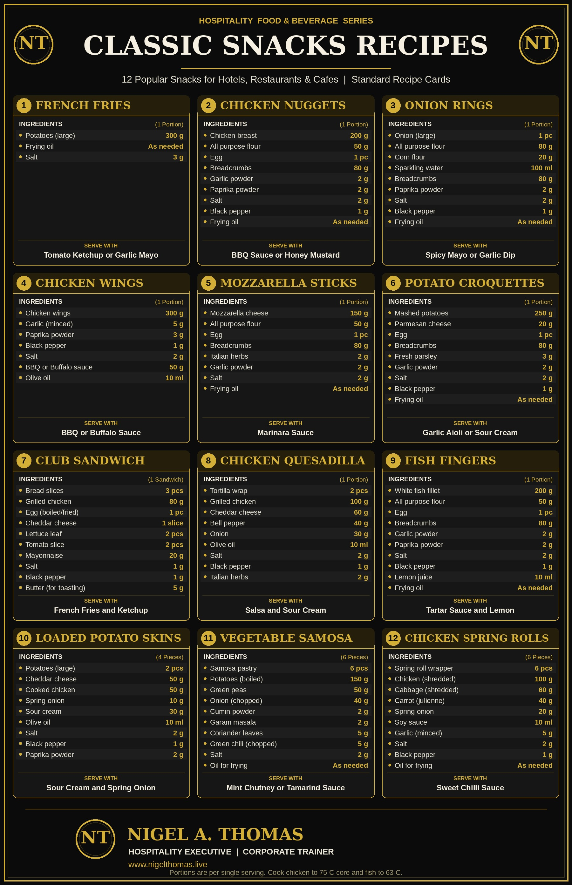

Classic Snacks Recipes: 12 Hotel & Restaurant Favourites
Ask any experienced food and beverage manager which part of the menu pays the bills quietly, month after month, and the answer is rarely the tasting menu. It is the snack list. The bar-bites, the poolside plate, the room service late-night order, the cafe counter at four in the afternoon. Snacks are ordered fast, cooked fast and eaten fast, and a guest who receives a hot, crisp, properly seasoned portion within ten minutes forms a stronger opinion of your kitchen than one who waits forty minutes for something ambitious.
Over three decades in luxury hotels, resorts and cruise operations across India, the Middle East and the USA, I have seen the same twelve snacks appear on menus everywhere. They travel because they work: they are familiar, they scale, and they are profitable when the recipe is standardised. This guide sets out the standard single-portion recipes for twelve classics, with the kitchen judgement that sits behind the numbers. The full recipe poster is at the bottom of the page for you to view and download.
Why Standard Recipe Cards Matter for Snacks
A snack looks simple, and that is exactly why it is mishandled. When ten cooks make nuggets ten different ways, the guest gets a different product depending on who is on shift, and the cost controller sees a food cost percentage that swings without explanation. A standard recipe card fixes three things at once: the portion, the method and the cost.
Every quantity in this guide is written per single portion. That is deliberate. Per-portion recipes can be multiplied for a banquet, divided for a tasting sample and costed to the last gram. They also make training faster. A new commis who is handed a card saying 200 g chicken breast, 50 g flour, one egg and 80 g breadcrumbs can produce a correct nugget on the first attempt, without a lecture.
Use the same three-stage rule for every breaded item in this guide: dry, wet, crumb. Season the flour, beat the egg, press the crumb on firmly, then rest the coated product in the chiller for at least fifteen minutes before frying. The rest lets the coating hydrate and grip, which is the single biggest reason breading stays on in the fryer.
1. French Fries
Per portion: 300 g large potatoes, frying oil as needed, 3 g salt. Serve with tomato ketchup or garlic mayo.
Fries are the most-ordered side dish in the world and the most easily ruined. Choose a floury, low-sugar potato so the fries brown evenly rather than darkening at the edges before the centre is cooked. Cut to a uniform thickness, wash away the surface starch under cold water, then dry thoroughly. Wet potatoes spit in the fryer and lower the oil temperature.
The professional method is two-stage. Blanch at around 160°C until tender but pale, drain, and cool completely. Finish to order at 180 to 190°C until golden. Salt the moment they leave the basket, while the surface oil can still hold the crystals. A 3 g seasoning is a starting point; taste your own product and adjust. Blanched fries can be prepared hours ahead, which is why a busy pool bar can serve them in three minutes.
2. Chicken Nuggets
Per portion: 200 g chicken breast, 50 g flour, 1 egg, 80 g breadcrumbs, 2 g garlic powder, 2 g paprika, 2 g salt, 1 g black pepper, frying oil. Serve with BBQ sauce or honey mustard.
A good nugget is real chicken breast, cut into even pieces of roughly the same weight so they cook at the same rate. Toss the pieces in the seasoned flour first, then egg, then crumb. Season at the flour stage rather than only the crumb; the flavour then sits closer to the meat.
Fry at 170 to 175°C. Too hot and the crumb burns before the centre cooks; too cool and the nugget soaks up oil. The safe endpoint is a core temperature of 75°C, checked with a probe on a sample from each batch. Rest for a minute on a rack, not on paper, so the underside stays crisp. If you are running a children’s menu, nuggets are your best-selling item; keep the seasoning gentle and the portion honest.
3. Onion Rings
Per portion: 1 large onion, 80 g flour, 20 g corn flour, 100 ml sparkling water, 80 g breadcrumbs, 2 g paprika, 2 g salt, 1 g black pepper, frying oil. Serve with spicy mayo or garlic dip.
The recipe card pairs a light batter of flour, corn flour and sparkling water with a crumb finish. The carbonation traps tiny air pockets in the batter, and the corn flour adds crispness that holds for longer at the table. Use cold sparkling water and mix briefly; a few lumps are better than an overworked, chewy batter.
Cut the onion into rings about a centimetre thick, separate them, and remove the thin inner membrane, which otherwise pulls the whole onion out of the coating in one bite. Dredge in seasoned flour, dip in batter, then press into crumbs. Fry at 175°C until deep golden. Drain well and serve straight away; onion rings lose their crunch faster than almost any other snack, so they suit made-to-order service far better than long holding.
4. Chicken Wings
Per portion: 300 g wings, 5 g minced garlic, 3 g paprika, 1 g black pepper, 2 g salt, 50 g BBQ or buffalo sauce, 10 ml olive oil. Serve with BBQ or buffalo sauce.
Wings are forgiving and profitable, but only when the skin is rendered properly. Marinate the wings in oil, garlic, paprika, salt and pepper, and give them at least two hours in the chiller. Pat them dry before cooking; moisture is the enemy of crisp skin.
You can roast them in a hot oven, air-fry them or deep-fry them. For each method the target is the same: fully cooked (75°C at the thickest joint) with skin that is deeply coloured and rendered. Toss with the sauce only after cooking, in a bowl, just before plating. Sauced wings held under a lamp turn soft within minutes. Offer celery and carrot sticks with a cooling dip and the plate looks generous for very little added cost.
5. Mozzarella Sticks
Per portion: 150 g mozzarella, 50 g flour, 1 egg, 80 g breadcrumbs, 2 g Italian herbs, 2 g garlic powder, 2 g salt, frying oil. Serve with marinara sauce.
The classic failure here is the burst stick: cheese leaking into the oil while the coating is left empty. The cure is temperature and double coating. Cut low-moisture mozzarella into even batons, coat in flour, egg and herbed crumb, then repeat the egg and crumb for a second layer. Freeze the coated sticks until solid.
Fry straight from frozen at about 180°C for a short time, just long enough to turn the coating golden and soften the cheese into that famous stretch. If you fry from thawed, the cheese melts before the crust sets. A frozen stock of prepared sticks makes this one of the most convenient items on a late-night or bar menu, and the marinara can be made in bulk and held chilled.
6. Potato Croquettes
Per portion: 250 g mashed potatoes, 20 g Parmesan, 1 egg, 80 g breadcrumbs, 3 g fresh parsley, 2 g garlic powder, 2 g salt, 1 g black pepper, frying oil. Serve with garlic aioli or sour cream.
Croquettes are a wonderful use of leftover mash, but the mash must be dry. Steam or bake the potatoes rather than boiling them in a lot of water, pass them through a ricer, and let the steam escape before you add cheese and herbs. Wet mash produces a croquette that collapses in the fryer.
Shape into cylinders while the mixture is cold, coat in flour, egg and crumb, and chill before frying. The shape holds far better after an hour in the fridge. Fry at 175°C until the crust is golden and the centre is piping hot. Fresh parsley and Parmesan give an elegant flavour, and they suit a plated canape as well as a bar snack.
7. Club Sandwich
Per sandwich: 3 slices of bread, 80 g grilled chicken, 1 egg (boiled or fried), 1 slice cheddar, 2 lettuce leaves, 2 tomato slices, 20 g mayonnaise, 1 g salt, 1 g black pepper, 5 g butter for toasting. Serve with french fries and ketchup.
The club sandwich is the emblem of hotel room service. Three slices of toasted bread make two layers, and the discipline is in building them so that each bite contains everything. Toast the bread evenly, butter lightly, and spread mayonnaise to the edges so the sandwich holds together.
Layer chicken and cheese on the first level, egg, lettuce and tomato on the second, season each layer, and secure with cocktail sticks before cutting into four triangles. Cut with a serrated knife using a sawing motion so the layers are not crushed. Serve with the fries alongside, and remember that a club sandwich has the longest travel time of all the snacks when delivered to a room. Pack the crisp fries separately from the sandwich when the tray leaves the kitchen.
8. Chicken Quesadilla
Per portion: 2 tortilla wraps, 100 g grilled chicken, 60 g cheddar, 40 g bell pepper, 30 g onion, 10 ml olive oil, 2 g salt, 1 g black pepper, 2 g Italian herbs. Serve with salsa and sour cream.
A quesadilla is the fastest hot snack on this list and one of the cheapest to make. Sweat the pepper and onion in a little olive oil until just soft, season, and toss with the grilled chicken. Spread the filling and cheese over one tortilla, cover with the second, and toast in a dry or lightly oiled pan.
The trick is moderate heat. If the pan is too hot the tortilla scorches before the cheese melts. Cook two to three minutes each side, pressing gently, until the wrap is crisp and the cheese is fully melted. Rest for a minute, then cut into wedges with a sharp knife or a wheel cutter. Because the recipe uses cooked chicken, it is also a clever way to use trimmings from the grill station, provided cooked chicken is cooled and stored safely.
9. Fish Fingers
Per portion: 200 g white fish fillet, 50 g flour, 1 egg, 80 g breadcrumbs, 2 g garlic powder, 2 g paprika, 2 g salt, 1 g black pepper, 10 ml lemon juice, frying oil. Serve with tartar sauce and lemon.
Choose a firm white fish that holds its shape, and portion it into even fingers. A quick squeeze of lemon juice and seasoning before breading brightens the flavour. Pat the fish dry, coat in flour, egg and crumb, and chill before frying.
Fish cooks quickly, so use a slightly lower oil temperature of 170 to 175°C and watch the colour rather than the clock. The internal temperature should reach 63°C. Overcooked fish is dry, and the coating will already be dark. Serve with a house tartar sauce made from mayonnaise, chopped capers, gherkins and herbs, and always add a lemon wedge. Fish is a major allergen, so identify it clearly on the menu and use dedicated frying oil where you can.
10. Loaded Potato Skins
Per 4 pieces: 2 large potatoes, 50 g cheddar, 50 g cooked chicken, 10 g spring onion, 30 g sour cream, 10 ml olive oil, 2 g salt, 1 g black pepper, 2 g paprika. Serve hot with sour cream and spring onion.
Two large potatoes yield four skins. Bake them until soft, then halve, scoop out most of the flesh and leave a sturdy wall of about half a centimetre. Brush the shells inside and out with olive oil, season with salt, pepper and paprika, and crisp them in a hot oven before filling.
Fill with cheddar and the cooked chicken, then return to the oven until the cheese bubbles. Top with sour cream and sliced spring onion after they come out. The scooped potato flesh should never be wasted; it becomes the mash for croquettes (snack number six), which is exactly the kind of cross-utilisation that keeps a kitchen’s food cost healthy.
11. Vegetable Samosa
Per 6 pieces: 6 samosa pastry sheets, 150 g boiled potatoes, 50 g green peas, 40 g chopped onion, 2 g cumin powder, 2 g garam masala, 5 g coriander leaves, 5 g chopped green chili, 2 g salt, oil for frying. Serve with mint chutney or tamarind sauce.
The samosa is India’s gift to the snack world, and on a hotel menu it is often the item guests from other countries are most curious about. The filling should be dry and well seasoned: crush the boiled potato roughly, mix with peas, onion, cumin, garam masala, coriander and chili, and cool completely before filling.
Fold each pastry into a cone, fill, and seal the edge with a flour paste. Fry at a moderate 160 to 170°C so the pastry cooks through and blisters gently, rather than browning too fast. A samosa fried too hot looks lovely and tastes raw. Serve with mint chutney and a sweet tamarind sauce. It is naturally vegetarian, which makes it valuable to guests with dietary restrictions, but confirm that your frying oil is not shared with meat or fish items where this matters.
12. Chicken Spring Rolls
Per 6 pieces: 6 spring roll wrappers, 100 g shredded chicken, 60 g shredded cabbage, 40 g julienne carrot, 20 g spring onion, 10 ml soy sauce, 5 g minced garlic, 2 g salt, 1 g black pepper, oil for frying. Serve with sweet chilli sauce.
Stir-fry the filling quickly over high heat so the vegetables stay crunchy, then spread it out to cool. A warm or wet filling tears the wrapper and makes soggy rolls. Drain any liquid before rolling.
Place a small amount of filling near one corner, fold in the sides, roll tightly and seal with flour paste or beaten egg. A tight roll means less oil absorption and a crisper finish. Fry at 175°C until evenly golden, then drain. Soy sauce contains soy and wheat, and wrappers contain gluten, so declare both. Sweet chilli sauce balances the salt beautifully and is easy to produce in large batches.
Frying Oil Management
Six of these twelve snacks are deep-fried, so oil is the largest single quality lever in the section. Fresh oil is expensive, but poor oil costs more in lost guests. Follow a written routine: filter the oil at least daily, top up with fresh oil, record temperatures and never overload the basket. An overloaded basket drops the oil temperature sharply and produces greasy food.
Watch for warning signs: dark colour, foaming, smoking below the normal frying temperature and an acrid smell. Use a total polar compounds meter where possible. In India the food safety regulator sets a limit of 25 percent total polar compounds, and oil beyond that must be discarded. Keep a discard log, and never mix used oil with a fresh batch to disguise its condition. Do not fry fish, cheese products and vegetarian items together if guests have allergen or dietary needs, and avoid salting food over the fryer, which speeds up oil breakdown.
Hot Holding and Food Safety
Fried snacks are best served the moment they are cooked, but pass service means some holding is inevitable. Hold hot food at 60°C or above, on a rack under a heat lamp or in a ventilated cabinet rather than a sealed one, which steams the coating. Set a maximum holding time, typically twenty to thirty minutes for crisp items, and discard beyond it.
Cooking temperatures are non-negotiable. Chicken products must reach a core temperature of 75°C, and fish 63°C. Probe sample pieces from each batch and record the reading. Keep raw chicken and raw fish on separate boards, colour-coded, and store breaded, uncooked items in labelled, dated trays below ready-to-eat foods in the chiller. Cooked fillings such as the samosa potato mixture and the chicken for quesadillas must be cooled quickly and refrigerated, not left on the counter to cool slowly.
Allergen Control
This snack list touches most of the major allergen groups. Wheat and gluten appear in flour, breadcrumbs, tortillas, pastry and wrappers. Egg is in the coating of six items. Milk is present in the cheeses, sour cream, butter and aioli. Fish appears in the fish fingers, soy in the spring rolls, and mustard in honey mustard. Sesame can appear on buns and in sauces.
Build an allergen matrix for the menu and keep it current whenever a supplier changes a product. Train service staff to check the matrix and never guess. Shared fryers are a real cross-contact risk, so decide which items go in which fryer and label the fryers. If a guest tells you of an allergy, the order should be flagged on the ticket and prepared with clean equipment.
Costing and Menu Engineering
Because every card in this guide is a per-portion recipe, costing is straightforward. Multiply each ingredient quantity by its purchase price per unit and add a modest allowance for oil, seasoning and garnish. Snacks generally carry a low ingredient cost relative to the selling price, but chicken breast, fish fillet and cheese are the expensive lines to watch.
| Snack group | Main cost driver | Practical control |
|---|---|---|
| Potato items (fries, croquettes, skins) | Yield after peeling and trimming | Use trimmings and scooped flesh in other items |
| Chicken items (nuggets, wings, quesadilla, rolls) | Protein price and portion weight | Weigh every portion; freeze in portion packs |
| Cheese and fish (sticks, fish fingers) | Ingredient price | Tight portion control; batch-prepare and freeze |
| Vegetarian items (rings, samosa) | Labour | Batch-produce and freeze uncooked |
Menu engineering completes the picture. Sharing platters that combine four or five of these snacks lift the average cheque and simplify ordering for groups. Put the highest-margin items in the most visible position, and price the sauces as a small upsell. Review sales monthly and remove the slowest seller; a short, well-executed snack menu outperforms a long one every time.
Final Thoughts
Classic snacks endure because they satisfy something simple and universal. The recipes above are not complicated, and their difficulty lies entirely in consistency: the same crumb, the same oil temperature, the same seasoning and the same timing, every shift and every day. Give your team the cards, teach the method behind the numbers, taste the product yourself daily, and the humble snack menu will do more for your reputation than you expect.
Print the poster, pin it in the kitchen, and use it in your induction training. Then adjust the quantities to your own house style and record the changes on your standard recipe cards.
